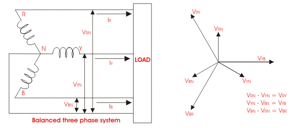

Concept of three phase vector diagram is very much required for determining fault calculation of electrical power system. Practically almost every electrical power system deals with three phase power.
Diagram on which one or more vectors can be represented is referred as vector diagram. On such diagram, alternating quantities are represented by arrow. The length of the arrow represents the rms value of the alternating quantity. The angular position represents the relative position of a vector (alternating electric current or voltage) with respect to another vector or to a reference axis. The arrow head represents the direction in which the vector is acting. When an electrical quantity acts away from the source towards the direction of load, the vector represents the quantity is considered as positive vector.
Now let’s have a discussion on some terms related to protective relay.
Pickup level of actuating signal: The value of actuating quantity (voltage or electric current) which is on threshold above which the relay initiates to be operated.
If the value of actuating quantity is increased, the electromagnetic effect of the relay coil is increased and above a certain level of actuating quantity the moving mechanism of the relay just starts to move.
Three phase electrical quantities can be represented by vector diagram. The diagram represent three phase quantities is known as three phase vector diagram.
Voltages of a three phase system is shown in the figure.
Phase-sequence of the vectors, represent voltages, is shown in the figure by an arrow. The term phase sequence is used to indicate the order in which vectors are placed in relation to one another for counter-clockwise rotation. In the figure here three, phase to neutral voltages, are rotating. That means they would reach their maximum positive values in the sequence first R, then Y and then B. This sequence is referred as positive sequence. This represents the normal healthy condition of system.

 by
by